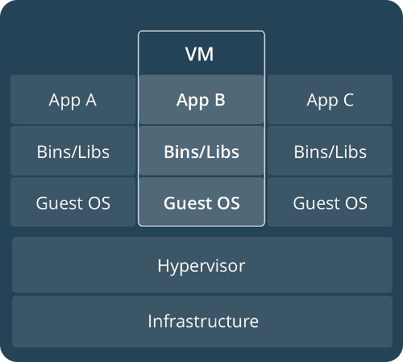
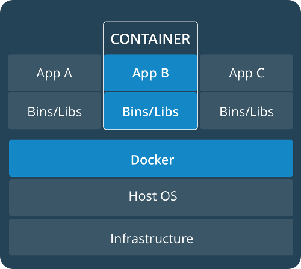

Created: 2017-09-25 Mon 19:39
 
Docker provides support for Windows/Mac/Linux. though relies heavily on features embedded in the Linux Kernel to work.
Download Docker For Windows: https://docs.docker.com/docker-for-windows/install/
Download Docker For Mac: https://docs.docker.com/docker-for-mac/install/
For linux, using Ubuntu is probably the best: https://docs.docker.com/engine/installation/linux/ubuntu/
FROM node:8-alpine LABEL maintainer "Robby O'Connor <robby.oconnor@gmail.com>" CMD ["yarn","start"] WORKDIR /app RUN apk add --no-cache bash curl openssl git build-base gosu yarn \ --repository http://dl-3.alpinelinux.org/alpine/edge/testing/ \ --repository http://dl-3.alpinelinux.org/alpine/edge/community/ COPY docker/build.sh / RUN bash /build.sh COPY . /app ~ ~ ~ ~ ~ ~ ~ ~
version: "2.1" services: web: user: "${UID-1000}:${GID-1000}" build: context: . ports: - 0.0.0.0:3000:3000 depends_on: mongodb: condition: service_healthy volumes: - .:/app restart: unless-stopped container_name: "app" mongodb: image: mongo:3.4 ports: - "0.0.0.0:27017:27017" container_name: "_mongo" volumes: - ./data/mongo/db:/data/db healthcheck: test: ["CMD", "mongo", "--quiet", "localhost/test", "--eval","'quit(db.runCommand({ ping: 1 }).ok ? 0 : 1)';"] interval: 1m30s timeout: 10s retries: 3 restart: unless-stopped command: "mongod --nojournal --smallfiles" ~ ~ ~ ~ ~ ~ ~ ~